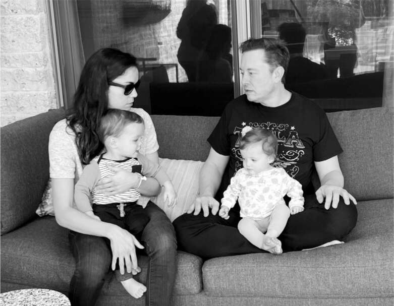

Cuộc đua vĩ đại
Các cuộc cách mạng công nghệ thường bắt đầu âm thầm. Không ai thức dậy vào một buổi sáng năm 1760 và hét lên, “Trời ơi, Cách mạng Công nghiệp vừa bắt đầu!” Ngay cả Cách mạng Kỹ thuật số cũng âm thầm diễn ra trong nhiều năm, với những người có sở thích lắp ráp máy tính cá nhân để trưng bày tại các buổi tụ họp như Câu lạc bộ Máy tính Homebrew, trước khi mọi người nhận thấy thế giới đang thay đổi một cách cơ bản. Nhưng Cách mạng Trí tuệ Nhân tạo thì khác. Chỉ trong vài tuần vào mùa xuân năm 2023, hàng triệu người am hiểu công nghệ và sau đó là những người bình thường đã nhận thấy một sự chuyển đổi đang diễn ra với tốc độ chóng mặt, sẽ thay đổi bản chất của công việc, học tập, sáng tạo và các công việc hàng ngày.
Trong một thập kỷ, Musk đã lo lắng về mối nguy hiểm rằng trí tuệ nhân tạo một ngày nào đó có thể vượt khỏi tầm kiểm soát—phát triển ý thức riêng, có thể nói như vậy—và đe dọa loài người. Khi người đồng sáng lập Google, Larry Page, bác bỏ những lo ngại của ông, gọi ông là “người theo chủ nghĩa loài người” vì ưu tiên loài người hơn các dạng trí thông minh khác, điều đó đã phá hủy tình bạn của họ. Musk đã cố gắng ngăn Page và Google mua DeepMind, công ty được thành lập bởi nhà tiên phong AI Demis Hassabis. Khi thất bại, ông đã thành lập một phòng thí nghiệm cạnh tranh, một tổ chức phi lợi nhuận có tên là OpenAI, với Sam Altman vào năm 2015.
Con người có thể khó tính hơn máy móc, và cuối cùng Musk đã chia tay Altman, rời khỏi hội đồng quản trị của OpenAI và lôi kéo kỹ sư nổi tiếng Andrej Karpathy của họ để lãnh đạo đội Autopilot tại Tesla. Sau đó, Altman thành lập một nhánh vì lợi nhuận của OpenAI, nhận được khoản đầu tư 13 tỷ đô la từ Microsoft và tuyển dụng lại Karpathy.
Trong số các sản phẩm OpenAI phát triển có một chatbot tên là ChatGPT, được huấn luyện trên bộ dữ liệu internet khổng lồ để trả lời câu hỏi của người dùng. Khi Altman và nhóm của mình trình diễn phiên bản đầu tiên cho Bill Gates vào tháng 6 năm 2022, ông nói rằng ông sẽ không quan tâm trừ khi nó có thể làm được điều gì đó như vượt qua kỳ thi sinh học nâng cao. "Tôi nghĩ điều đó sẽ khiến họ mất hai hoặc ba năm", ông nói. Thay vào đó, họ đã quay lại chỉ sau ba tháng. Altman, CEO của Microsoft là Satya Nadella và những người khác đã đến ăn tối tại nhà ông để trình diễn một phiên bản mới, được gọi là GPT-4, và Gates đã dồn dập hỏi nó các câu hỏi về sinh học. "Thật đáng kinh ngạc", Gates nói. Sau đó, ông hỏi nó sẽ nói gì với một người cha có con bị bệnh. "Nó đã đưa ra một câu trả lời rất cẩn thận và xuất sắc, có lẽ tốt hơn bất kỳ ai trong số chúng tôi có thể đưa ra."
Vào tháng 3 năm 2023, OpenAI đã phát hành GPT-4 ra công chúng. Google sau đó đã phát hành một chatbot đối thủ có tên là Bard. Sân khấu do đó đã được thiết lập cho một cuộc cạnh tranh giữa OpenAI-Microsoft và DeepMind-Google để tạo ra các sản phẩm có thể trò chuyện với con người một cách tự nhiên và thực hiện vô số nhiệm vụ trí tuệ dựa trên văn bản.
Musk lo lắng rằng những chatbot và hệ thống AI này, đặc biệt là trong tay Microsoft và Google, có thể bị ảnh hưởng về mặt chính trị, thậm chí có thể bị nhiễm thứ mà ông gọi là virus tư tưởng "thức tỉnh". Ông cũng lo sợ rằng các hệ thống AI tự học có thể trở nên thù địch với loài người. Và ở mức độ trước mắt hơn, ông lo lắng rằng chatbot có thể được huấn luyện để tràn ngập Twitter với thông tin sai lệch, báo cáo thiên vị và lừa đảo tài chính. Tất nhiên, tất cả những điều đó đã được thực hiện bởi con người. Nhưng khả năng triển khai hàng nghìn chatbot vũ khí hóa sẽ khiến vấn đề trở nên tồi tệ hơn gấp trăm, gấp nghìn lần.
Mong muốn giải cứu thế giới của ông trỗi dậy. Cuộc cạnh tranh song phương giữa OpenAI và Google cần, theo ông, một đấu sĩ thứ ba, một người sẽ tập trung vào an toàn AI và bảo tồn nhân loại. Ông phẫn uất vì đã thành lập và tài trợ cho OpenAI nhưng giờ lại bị bỏ rơi. AI là cơn bão lớn nhất đang hình thành. Và không ai bị thu hút bởi một cơn bão hơn Musk.
Vào tháng 2 năm 2023, ông đã mời - có lẽ một từ tốt hơn là "triệu tập" - Sam Altman gặp ông tại Twitter và yêu cầu ông mang theo các tài liệu thành lập OpenAI. Musk thách thức ông biện minh cho việc làm thế nào ông có thể hợp pháp biến một tổ chức phi lợi nhuận được tài trợ bởi các khoản quyên góp thành một tổ chức vì lợi nhuận có thể kiếm được hàng triệu đô la. Altman đã cố gắng chứng minh rằng tất cả đều hợp pháp, và ông khẳng định rằng cá nhân ông không phải là cổ đông hoặc kiếm tiền từ việc này. Ông cũng đề nghị Musk cổ phần trong công ty mới, nhưng Musk đã từ chối.
Thay vào đó, Musk đã tung ra một loạt các cuộc tấn công vào OpenAI và Altman. "OpenAI được tạo ra như một mã nguồn mở (đó là lý do tại sao tôi đặt tên nó là 'Open' AI), một công ty phi lợi nhuận để phục vụ như một đối trọng với Google, nhưng bây giờ nó đã trở thành một công ty nguồn đóng, lợi nhuận tối đa, được kiểm soát hiệu quả bởi Microsoft", ông nói. "Tôi vẫn bối rối không hiểu làm thế nào một tổ chức phi lợi nhuận mà tôi đã quyên góp 100 triệu đô la lại bằng cách nào đó trở thành một công ty vì lợi nhuận với giá trị thị trường 30 tỷ đô la. Nếu điều này là hợp pháp, tại sao không phải ai cũng làm điều đó?" Ông gọi AI là "công cụ mạnh mẽ nhất mà loài người từng tạo ra", và sau đó than thở rằng nó "giờ nằm trong tay của một tập đoàn độc quyền tàn nhẫn."
Altman cảm thấy phiền lòng. Khác với Musk, ông nhạy cảm và không thích đối đầu. Ông không kiếm được tiền từ OpenAI, và ông cảm thấy Musk chưa thực sự hiểu rõ vấn đề an toàn AI phức tạp như thế nào. Tuy nhiên, ông cảm thấy những lời chỉ trích của Musk xuất phát từ mối quan tâm chân thành. "Ông ta là một kẻ khó ưa," Altman nói với Kara Swisher. "Cách hành xử của ông ta không phải là kiểu tôi muốn noi theo. Nhưng tôi nghĩ ông ta thực sự quan tâm, và ông ta đang rất căng thẳng về tương lai của nhân loại."
Luồng dữ liệu của Musk
Năng lượng cho AI là dữ liệu. Các chatbot mới được đào tạo trên lượng thông tin khổng lồ, chẳng hạn như hàng tỷ trang web và các tài liệu khác. Google và Microsoft, với công cụ tìm kiếm, dịch vụ đám mây và quyền truy cập email, sở hữu nguồn dữ liệu dồi dào để huấn luyện các hệ thống này.
Vậy Musk có thể đóng góp gì? Một tài sản là nguồn cấp dữ liệu Twitter, bao gồm hơn một nghìn tỷ tweet được đăng trong những năm qua, với 500 triệu tweet mới mỗi ngày. Đó là trí tuệ tập thể của nhân loại, tập dữ liệu kịp thời nhất thế giới về các cuộc trò chuyện, tin tức, sở thích, xu hướng, tranh luận và ngôn ngữ đời thực. Hơn nữa, đó là một sân tập tuyệt vời để chatbot thử nghiệm cách con người phản ứng với câu trả lời của nó. Musk đã không nghĩ đến giá trị của nguồn cấp dữ liệu này khi mua Twitter. "Thực ra, đó là một lợi ích phụ mà tôi chỉ nhận ra sau khi mua lại," ông nói.
Twitter đã cho phép các công ty khác sử dụng nguồn dữ liệu này khá thoải mái. Vào tháng 1, Musk đã triệu tập một loạt cuộc họp đêm khuya trong phòng họp Twitter để tìm cách tính phí cho việc này. "Đây là một cơ hội kiếm tiền," ông nói với các kỹ sư. Đó cũng là một cách để hạn chế Google và Microsoft sử dụng dữ liệu này để cải thiện chatbot AI của họ.
Musk còn có một kho dữ liệu khác: 160 tỷ khung hình video mỗi ngày mà Tesla nhận và xử lý từ camera trên ô tô của mình. Dữ liệu này khác với các tài liệu văn bản cung cấp thông tin cho chatbot. Đó là dữ liệu video về con người điều hướng trong các tình huống thực tế. Nó có thể giúp tạo ra AI cho robot vật lý, chứ không chỉ chatbot tạo văn bản.
Mục tiêu tối thượng của trí tuệ nhân tạo tổng quát là chế tạo những cỗ máy có thể hoạt động như con người trong không gian vật lý, chẳng hạn như nhà máy, văn phòng và trên bề mặt sao Hỏa, chứ không chỉ gây ấn tượng với chúng ta bằng những cuộc trò chuyện phi vật chất. Tesla và Twitter cùng nhau có thể cung cấp tập dữ liệu và khả năng xử lý cho cả hai hướng tiếp cận: dạy máy móc điều hướng trong không gian vật lý và trả lời các câu hỏi bằng ngôn ngữ tự nhiên.
Ngày định mệnh tháng Ba
"Có thể làm gì để AI an toàn?" Musk hỏi. "Tôi vẫn luôn trăn trở với điều đó. Chúng ta có thể thực hiện những hành động nào để giảm thiểu nguy hiểm của AI và đảm bảo ý thức con người tồn tại?"
Ông ngồi khoanh chân, chân trần trên sân hiên bên hồ bơi của ngôi nhà ở Austin của Shivon Zilis, giám đốc điều hành Neuralink, mẹ của hai đứa con của ông và là người bạn đồng hành trí tuệ của ông về trí tuệ nhân tạo kể từ khi thành lập OpenAI tám năm trước. Hai đứa con sinh đôi của họ, Strider và Azure, mười sáu tháng tuổi, đang ngồi trên đùi họ. Musk vẫn đang trong chế độ ăn kiêng gián đoạn; bữa sáng muộn của ông là bánh rán, thứ mà ông đã bắt đầu ăn thường xuyên. Zilis pha cà phê rồi cho vào lò vi sóng để làm nóng để ông không uống quá nhanh.
Một tuần trước đó, Musk nhắn tin cho tôi: "Có vài việc quan trọng tôi muốn trao đổi với anh. Chỉ có thể nói chuyện trực tiếp." Khi tôi hỏi anh ấy muốn gặp ở đâu và khi nào, anh ấy trả lời: "Ngày 15 tháng 3 tại Austin."
Tôi khá hoang mang, và thú thật là có chút lo lắng. Liệu có chuyện gì không hay đây? Hóa ra anh ấy muốn nói về những vấn đề anh ấy đang đối mặt trong tương lai, và điều đầu tiên anh ấy nghĩ đến là trí tuệ nhân tạo (AI). Chúng tôi phải để điện thoại trong nhà khi ngồi nói chuyện bên ngoài, vì theo anh ấy, ai đó có thể dùng chúng để nghe lén cuộc trò chuyện. Nhưng sau đó anh ấy đồng ý cho tôi sử dụng những gì anh ấy nói về AI trong cuốn sách.
Anh ấy nói bằng giọng đều đều, trầm thấp, xen lẫn những tràng cười gần như điên loạn. Anh ấy nhận thấy, trí thông minh của con người đang chững lại, vì mọi người không sinh đủ con cái. Trong khi đó, trí thông minh của máy tính đang tăng theo cấp số nhân, giống như Định luật Moore được tăng cường. Đến một lúc nào đó, sức mạnh trí tuệ sinh học sẽ bị lu mờ bởi sức mạnh trí tuệ kỹ thuật số.
Thêm vào đó, các hệ thống máy học AI mới có thể tự tiếp thu thông tin và tự học cách tạo ra kết quả, thậm chí tự nâng cấp mã và khả năng của chính mình. Thuật ngữ "điểm kỳ dị" được nhà toán học John von Neumann và nhà văn khoa học viễn tưởng Vernor Vinge sử dụng để mô tả thời điểm trí tuệ nhân tạo có thể tự phát triển với tốc độ không kiểm soát được và bỏ lại chúng ta, những con người tầm thường phía sau. "Điều đó có thể xảy ra sớm hơn chúng ta dự đoán," Musk nói với giọng đều đều, đầy ẩn ý.
Trong giây lát, tôi chợt nhận ra sự kỳ lạ của khung cảnh. Chúng tôi đang ngồi trên sân hiên ở ngoại ô, bên cạnh hồ bơi yên tĩnh trong một ngày xuân nắng đẹp, với hai đứa trẻ sinh đôi mắt sáng đang tập đi, trong khi Musk lại trầm ngâm suy đoán về thời gian còn lại để xây dựng một thuộc địa bền vững trên sao Hỏa trước khi một ngày tận thế do AI hủy diệt nền văn minh Trái đất. Điều đó khiến tôi nhớ lại lời của Sam Teller vào ngày thứ hai làm việc cho Musk, khi anh ấy tham dự một cuộc họp hội đồng quản trị của SpaceX: "Họ đang ngồi bàn luận nghiêm túc về kế hoạch xây dựng một thành phố trên sao Hỏa và mọi người sẽ mặc gì ở đó, và mọi người cứ hành động như thể đây là một cuộc trò chuyện hoàn toàn bình thường."
Musk lại chìm vào im lặng. Anh ấy đang, như Shivon gọi, "xử lý hàng loạt", ám chỉ cách một máy tính đời cũ sẽ xếp hàng một số tác vụ và chạy chúng theo trình tự khi có đủ năng lực xử lý. "Tôi không thể cứ ngồi yên và không làm gì cả," cuối cùng anh ấy nói nhỏ. "Với sự xuất hiện của AI, tôi đang tự hỏi liệu có đáng để dành nhiều thời gian suy nghĩ về Twitter hay không. Chắc chắn, tôi có thể biến nó thành tổ chức tài chính lớn nhất thế giới. Nhưng tôi chỉ có bấy nhiêu năng lực trí não và thời gian trong ngày. Ý tôi là, không phải tôi cần giàu hơn hay gì đó."
Tôi định lên tiếng, nhưng anh ấy biết tôi sắp hỏi gì. "Vậy tôi nên dành thời gian cho việc gì?" anh ấy nói. "Phóng Starship. Đến sao Hỏa giờ đây cấp bách hơn nhiều." Anh ấy lại dừng lại, rồi nói thêm, "Ngoài ra, tôi cần tập trung vào việc đảm bảo AI an toàn. Đó là lý do tại sao tôi đang thành lập một công ty AI."
X.AI
Musk đặt tên công ty mới của mình là X.AI và đích thân tuyển dụng Igor Babuschkin, một nhà nghiên cứu AI hàng đầu tại DeepMind của Google, làm kỹ sư trưởng. Ban đầu, X.AI sẽ đặt một số nhân viên mới tại trụ sở Twitter. Tuy nhiên, Musk cho biết cần phải tách X.AI thành một công ty khởi nghiệp độc lập, giống như Neuralink. Ông gặp khó khăn trong việc tuyển dụng các nhà khoa học AI vì cơn sốt trong lĩnh vực này đồng nghĩa với việc bất kỳ ai có kinh nghiệm đều có thể yêu cầu mức thưởng khởi điểm hàng triệu đô la hoặc hơn. "Sẽ dễ dàng hơn để thu hút họ nếu họ có thể trở thành người sáng lập của một công ty mới và nhận được cổ phần," ông giải thích.
Tôi tính toán rằng điều đó có nghĩa là ông sẽ điều hành sáu công ty: Tesla, SpaceX và đơn vị Starlink, Twitter, The Boring Company, Neuralink và X.AI. Con số này gấp ba lần so với Steve Jobs (Apple, Pixar) ở thời kỳ đỉnh cao.
Ông thừa nhận rằng mình đang khởi đầu chậm hơn OpenAI trong việc tạo ra một chatbot có thể trả lời các câu hỏi bằng ngôn ngữ tự nhiên. Nhưng công việc của Tesla về xe tự lái và robot Optimus đã giúp họ vượt lên trong việc tạo ra loại AI cần thiết để điều hướng trong thế giới thực. Điều này có nghĩa là các kỹ sư của ông thực sự đi trước OpenAI trong việc tạo ra trí tuệ nhân tạo tổng quát hoàn chỉnh, đòi hỏi cả hai khả năng. "AI thực tế của Tesla đang bị đánh giá thấp," ông nói. "Hãy tưởng tượng nếu Tesla và OpenAI phải hoán đổi nhiệm vụ. Họ sẽ phải làm xe tự lái, và chúng tôi sẽ phải làm chatbot mô hình ngôn ngữ lớn. Ai thắng? Chúng tôi."
Vào tháng 4, Musk giao cho Babuschkin và nhóm của ông ba mục tiêu chính. Đầu tiên là tạo ra một bot AI có thể viết mã máy tính. Một lập trình viên có thể bắt đầu gõ bằng bất kỳ ngôn ngữ lập trình nào và bot X.AI sẽ tự động hoàn thành nhiệm vụ cho hành động mà họ muốn thực hiện. Sản phẩm thứ hai sẽ là một chatbot cạnh tranh với dòng GPT của OpenAI, sử dụng các thuật toán và được đào tạo trên các bộ dữ liệu đảm bảo tính trung lập chính trị.
Mục tiêu thứ ba mà Musk giao cho nhóm thậm chí còn lớn hơn. Nhiệm vụ hàng đầu của ông luôn là đảm bảo rằng AI được phát triển theo cách giúp đảm bảo ý thức của con người tồn tại. Ông nghĩ rằng cách tốt nhất để đạt được điều đó là tạo ra một dạng trí tuệ nhân tạo tổng quát có thể "lý luận", "suy nghĩ" và theo đuổi "sự thật" làm nguyên tắc chỉ đạo. Bạn sẽ có thể giao cho nó những nhiệm vụ lớn, chẳng hạn như "Xây dựng một động cơ tên lửa tốt hơn."
Musk hy vọng một ngày nào đó, nó sẽ có thể giải quyết những câu hỏi lớn hơn và mang tính hiện sinh hơn. Nó sẽ là "một AI tìm kiếm sự thật tối đa. Nó sẽ quan tâm đến việc hiểu vũ trụ, và điều đó có thể sẽ khiến nó muốn bảo tồn nhân loại, bởi vì chúng ta là một phần thú vị của vũ trụ." Điều đó nghe có vẻ quen thuộc, và sau đó tôi nhận ra tại sao. Ông đang bắt tay vào một nhiệm vụ tương tự như nhiệm vụ được ghi lại trong cuốn kinh thánh hình thành (có lẽ là quá hình thành?) của thời thơ ấu của ông, cuốn sách đã kéo ông ra khỏi chứng trầm cảm hiện sinh thời niên thiếu, The Hitchhiker's Guide to the Galaxy, trong đó có một siêu máy tính được thiết kế để tìm ra "Câu trả lời cho Câu hỏi cuối cùng về Cuộc sống, Vũ trụ và Vạn vật."

Tại Austin cùng Shivon Zilis và cặp song sinh của họ, Strider và Azure